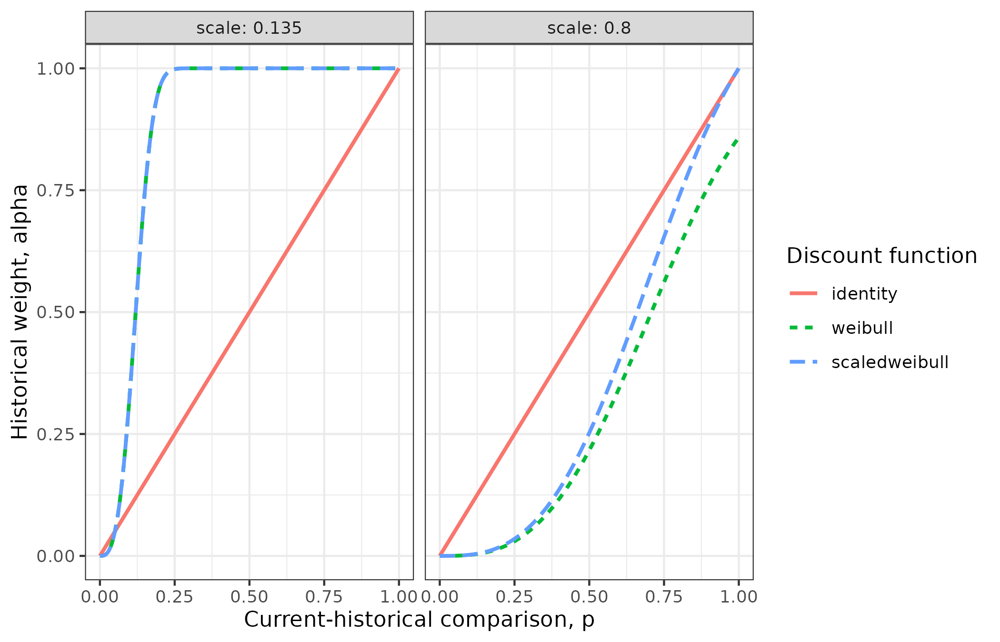

Borrowing historical information with bayesDP
Donnie Musgrove
Graeme L. Hickey
2026-11-22
Source:vignettes/borrowing.Rmd
borrowing.RmdPurpose and analysis choices
bayesDP estimates current-study outcomes by borrowing
information from historical data. A comparison of current and historical
outcomes determines a historical weight, \alpha. Each treatment arm is compared with
its own historical counterpart; the treatment-versus-control contrast is
calculated afterwards.
| Function | Input | One-arm quantity | Two-arm contrast |
|---|---|---|---|
bdpbinomial() |
Event counts and sample sizes | Event probability | Treatment minus control probability |
bdpnormal() |
Sample means, SDs, and sample sizes | Population mean | Treatment minus control mean |
bdplm() |
Individual outcomes and covariates | Not supported | Adjusted treatment minus control mean |
bdpsurvival() |
Follow-up times and event indicators | Survival probability at a specified time | Approximate common log hazard ratio |
The possible data sources form a two-by-two arrangement:
| Current study | Historical study | |
|---|---|---|
| Treatment | Current treatment | Historical treatment |
| Control | Current control | Historical control |
The binomial and normal functions allow several combinations of these sources, including a historical-only control. Such a comparison is not a concurrent randomized comparison: interpretation depends on comparability across studies. Regression requires both arms in both studies. The survival vignette describes its data requirements and modeling assumptions.
Choosing the historical weight
Three choices have different meanings:
| Setting | Meaning |
|---|---|
method = "fixed", fix_alpha = FALSE |
Estimate a weight from the data and hold it fixed for the final draws. |
method = "mc", fix_alpha = FALSE |
Recalculate a weight for each simulation draw; this is the function default. |
method = "fixed", fix_alpha = TRUE |
Prespecify the weight using alpha_max,
independently of agreement. |
Use alpha_max = 0 with fix_alpha = TRUE for
no borrowing, or alpha_max = 1 for full borrowing. In
two-arm analyses a vector supplies treatment and control limits, in that
order. bdplm() requires method = "fixed" when
fix_alpha = TRUE.
For survival outcomes, \alpha
weights historical events and exposure; the baseline Gamma shape and
rate, a0 and b0, enter the augmented
distribution once. The shape a_0 is
distinct from the borrowing weight \alpha. With full borrowing, the
interval-hazard posterior matches a pooled analysis using the same Gamma
prior and interval boundaries. The regression and normal models have
their own borrowing constructions, described in their vignettes.
The main worked examples explicitly choose
method = "fixed" so that their borrowing weights are easy
to interpret. This is a choice for exposition, not the default and not
evidence that one procedure is universally preferable. The survival
vignette also compares the two procedures using the same data and
analysis settings.
An estimated fixed weight
Let q be a directional posterior probability comparing current and historical parameters within one arm. For example, for a binomial probability,
q = \Pr(\tilde{\theta}<\theta_0\mid y,N,y_0,N_0), \qquad p = 2\min(q,1-q).
The transformation is symmetric: p is near 1 when the directional probability is near one half, and near 0 when one direction is strongly supported. It is a measure of the comparison used for borrowing, not the posterior probability that the parameters are equal or clinically equivalent. Its value depends on precision as well as the observed difference.
The historical weight is
\alpha = \alpha_{\max} W(p),\qquad 0\leq p\leq1.
A fixed estimated weight conditions the final calculation on this data-derived value. It does not introduce a separate prior distribution for the weight and estimate it jointly with the outcome parameters.
A weight for each draw
For binomial, normal, linear regression, and survival analyses,
method = "mc" computes a standardized difference Z^{(s)} from draw s and uses
p^{(s)}=2\{1-\Phi(|Z^{(s)}|)\}, \qquad \alpha^{(s)}=\alpha_{\max}W(p^{(s)}).
Here \Phi is the standard normal
cumulative distribution function (pnorm()), not its
quantile function. The model-specific vignettes define the
standardization. These draw-specific normal-tail comparisons are a
different procedure from estimating q
by a proportion of draws and then holding \alpha fixed.
The spread of \alpha^{(s)} is part of this procedure. Increasing the number of draws improves numerical estimation of the resulting distribution; it does not make its spread disappear. Report a distributional summary of the weights, and check whether scientific conclusions change between procedures. Do not describe the weight draws as a posterior from an explicitly specified model for \alpha.
Despite the argument names number_mcmc and
number_mcmc_*, these four functions use direct simulation
and, for regression, sampling from a numerical variance grid. They do
not require Markov-chain burn-in. Numerical stability should be checked
using more draws, independent seeds, and, for regression, a finer
variance grid.
Discount functions
discount_function |
W(p) |
|---|---|
"identity" (model default) |
p |
"weibull" |
1-\exp\{-(p/w_{\mathrm{scale}})^{w_{\mathrm{shape}}}\} |
"scaledweibull" |
Weibull CDF at p, divided by its value at 1 |
The identity choice gives \alpha=\alpha_{\max}p. Weibull shape and scale default to 3 and 0.135. The scaled form reaches \alpha_{\max} at p=1; the unscaled form need not. At the default parameters they are numerically indistinguishable over much of the range. The second panel below uses scale 0.8 solely to show the distinction.
curves <- expand.grid(
p = seq(0, 1, length.out = 201),
function_name = c("identity", "weibull", "scaledweibull"),
scale = c(0.135, 0.8)
)
curves$alpha <- mapply(function(p, function_name, scale) {
alpha_discount(p, discount_function = function_name,
alpha_max = 1, weibull_shape = 3, weibull_scale = scale)
}, curves$p, as.character(curves$function_name), curves$scale)
ggplot(curves, aes(p, alpha, colour = function_name, linetype = function_name)) +
geom_line(linewidth = 0.9) +
facet_wrap(~scale, labeller = label_both) +
theme_bw() +
labs(x = "Current-historical comparison, p", y = "Historical weight, alpha",
colour = "Discount function", linetype = "Discount function")
Historical weight with alpha_max = 1. The scale 0.8 panel illustrates the normalization; it is not a recommended calibration.
alpha_discount() applies the selected discount function
to a supplied comparison. It defaults to "weibull", unlike
the four model-fitting functions; specify the function explicitly when
comparing them. probability_discount() illustrates the
normal-data comparison and defaults to "fixed".
For a binomial analysis with a fixed weight, \alpha N_0 is the weighted historical sample size in the Beta update. It is not a general measure of effective information for every model: normal borrowing also depends on variances, and survival borrowing depends on events and exposure times.
Reporting and sensitivity analysis
Specify the endpoint, direction of benefit, treatment contrast, historical sources, borrowing method, discount function, and any maximum weights before interpreting the output. State the actual baseline priors and their parameterizations rather than calling them generically flat.
Report the posterior estimate and a 95% equal-tailed credible interval, together with the historical weights. A probability of a positive effect can be useful when its direction is meaningful. Equivalence requires a prespecified interval of clinically negligible effects; an interval containing zero alone does not establish equivalence.
Compare current-only, estimated borrowing, and full borrowing as sensitivity analyses. Assess historical-data relevance, changes in patient populations or clinical practice, and sensitivity to prior and discount settings. Outcome agreement alone cannot establish exchangeability or remove confounding.
The approach builds on Haddad et al. (2017), whose main construction uses a directional comparison and also discusses two-sided discounting. The package’s transformed comparison, draw-specific normal-tail procedure, and regression implementation should be identified as implementation choices. For a proposed trial design, evaluate operating characteristics across agreement and conflict scenarios; the supplied defaults are not a design-specific calibration.